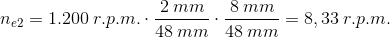

Es interesante calcular la relación de transmisión de la reductora, así como la velocidad final de salida del motorreductor, ya que de ello van a depender sus aplicaciones. A dicha velocidad la llamaremos np2.
En nuestro montaje, tenemos dos transmisiones, a saber: 1ª) motor → polea número 1; 2) eje de la polea número 1 → polea número 2.
Vamos a identificar cada una de las medidas de los ejes implicados:
- Dm es el diámetro del eje del motor.
- Dp1 es el diámetro de la polea número 1.
- De1 es el diámetro del eje de la polea número 1.
- Dp2 es el diámetro de la polea número 2.
- De2 es el diámetro del eje de la polea número 2.
Siempre se va a cumplir la ley fundamental de cualquier transmisión:
(1) (2)
Los ejes de las poleas son solidarios con ellas. Esto se traduce en que:
np1 = ne1 (3) y np2 = ne2 (4)
por lo que podemos escribir la fórmula (1) como:
(1’)
Si despejamos np2 en la fórmula (2), y np1 en la (1) tenemos que:
(5)
Que es lo que buscábamos: calcular la velocidad de la polea (o el eje) de salida a partir de la de giro del motor y los correspondientes diámetros. Si ahora sustituimos valores:
La velocidad de giro de nuestro motor (nm) oscila en torno a las 1.200 r.p.m.
Los diámetros de las poleas implicadas en el movimiento son:
Eje del motor: Dm = 2 mm
Diámetros interiores de las poleas: Dp1 = Dp2 = 48 mm
Ejes de las poleas: De1 = De2 = 8 mm
Sustituyendo los valores encontraremos que:
